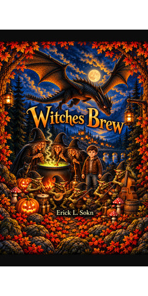
Kindle eBook
Full-color illustrated story
Included with Kindle Unlimited
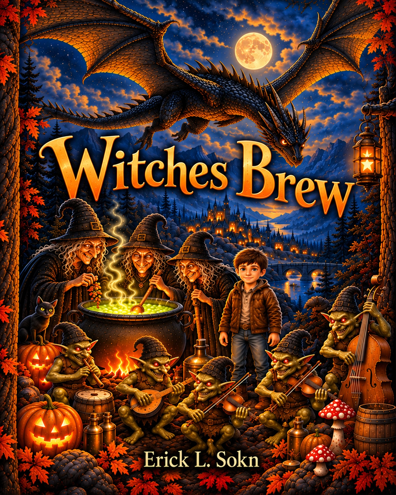
A rhyming Halloween story in pictures
Witches Brew is a rhyming Halloween story filled with witches, goblins, trolls, a dragon, and a little boy willing to find out for himself what is really going on.
Originally written for my children nearly thirty years ago, I recently returned to the story and illustrated it for my grandchildren. The illustrations were developed specifically around the story, its characters, and each scene using AI imaging technology, then edited and refined until they aligned with the images I had in mind.
An old-fashioned Halloween tale for children who like their bedtime stories just a little spooky.
A few pages from the illustrated edition—the same story pages included in Amazon's public sample.
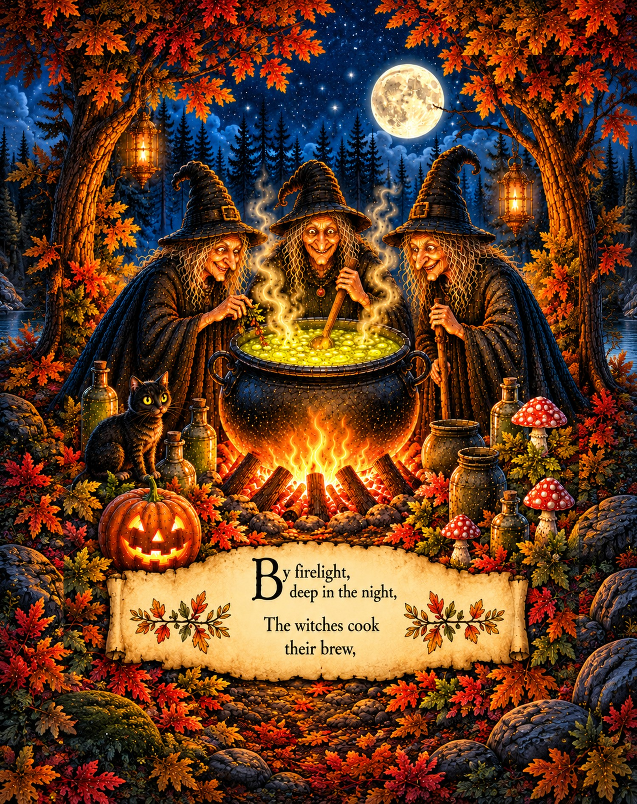
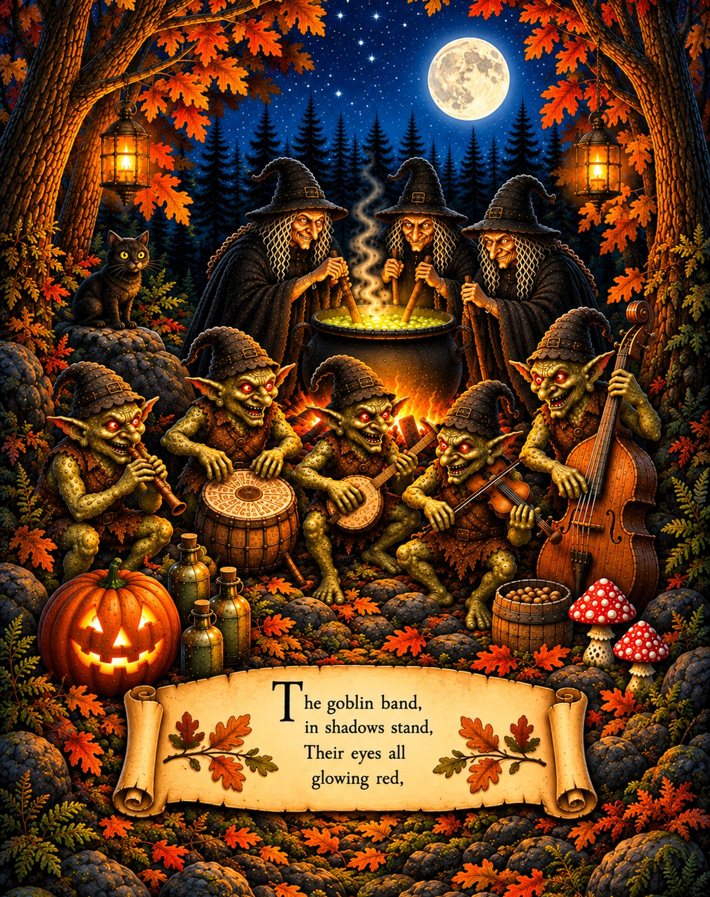
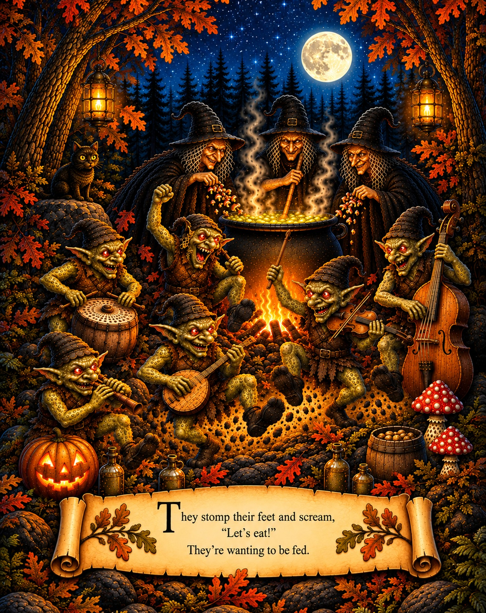
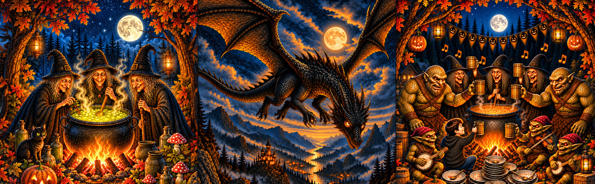
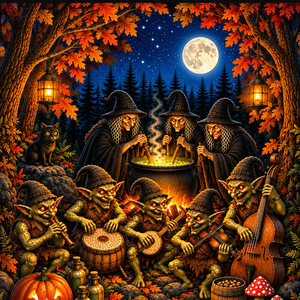
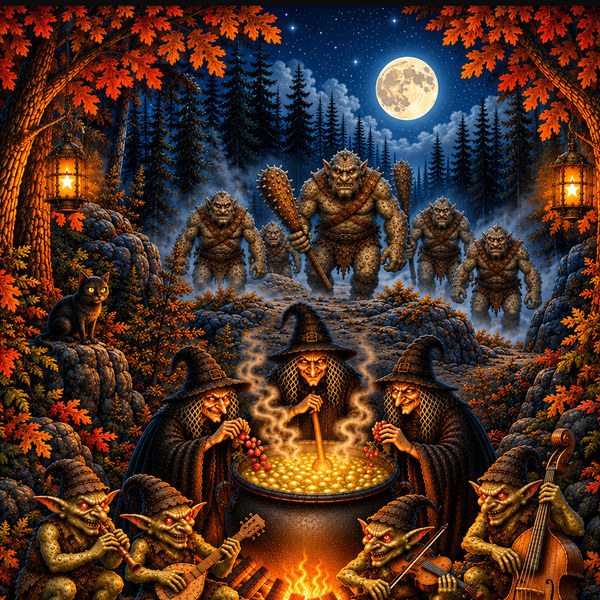
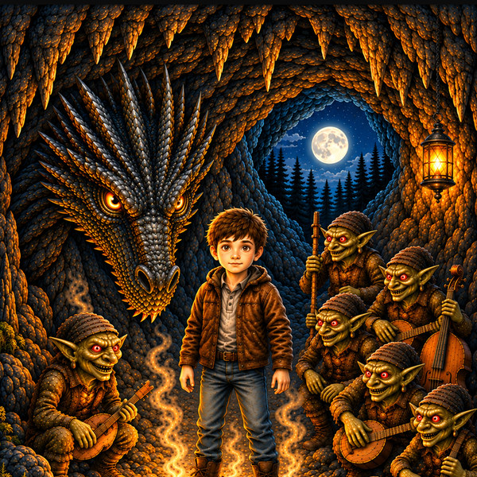
Witches Brew is a rhyming, full-color illustrated story available as a Kindle eBook and paperback. Both coloring books include the story and single-sided coloring pages. Choose detailed line art or the easy edition with simpler line work.
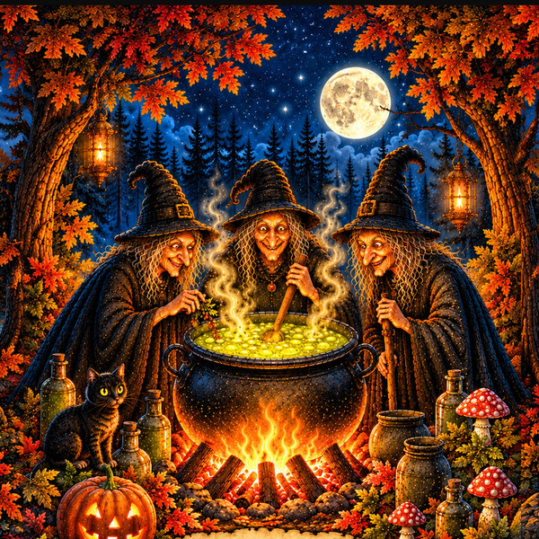
Full-color story
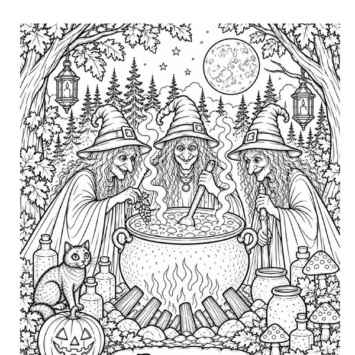
Story + detailed line art
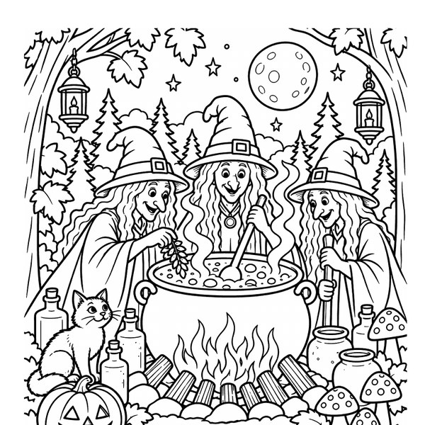
Story + simpler line art
Choose the illustrated story in digital or print, or one of the two coloring editions.

Full-color illustrated story
Included with Kindle Unlimited
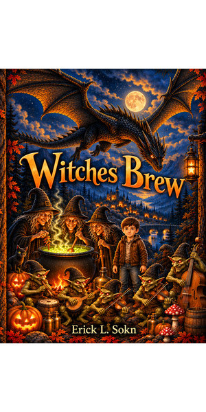
8 × 10 illustrated storybook
View on Amazon →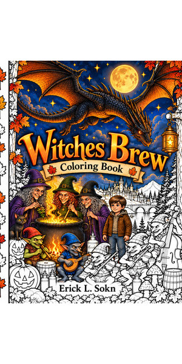
Story + detailed line art
View on Amazon →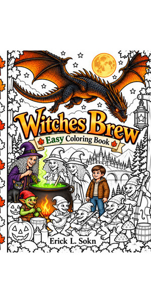
Story + simpler line art
View on Amazon →